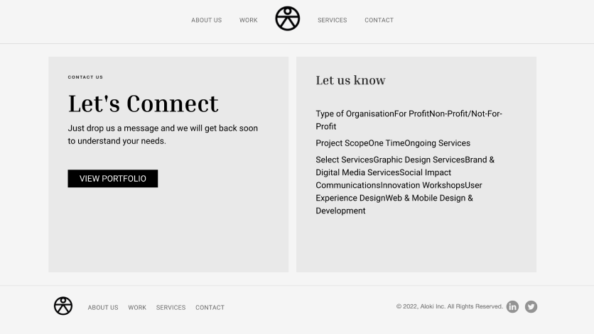
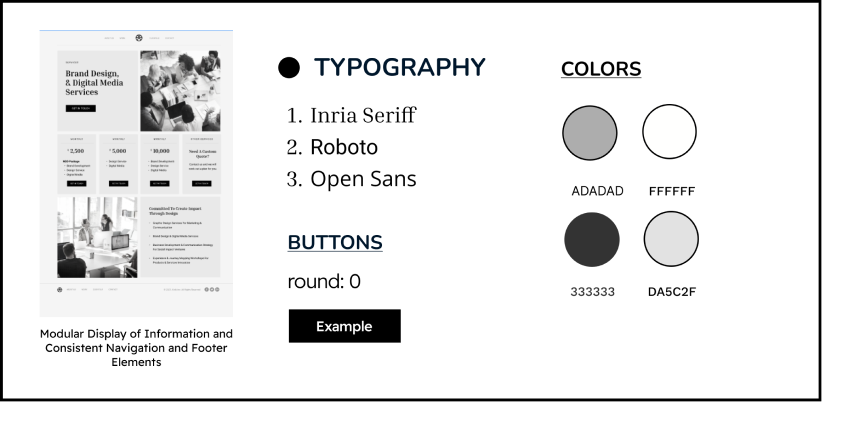

Sach Dubey
Aloki Case StudyAloki Design Lab Contact Page
In the spring quarter of 2023, I spent 12 weeks with the Inner Eye Arts board where I was tasked to rehaul their entire website to feel more contemporary and for the website to more accurately reflect the brand identity of the organization.
Team
Sach Dubey Dolly Parikh, MentorRole
UI/UX InternTime Frame
9 weeksOpportunity!
One of the most important skills I gained from this project was the ability to curate user interfaces with a personal touch so each category of audience feels catered to.
Process
Research
What is wrong with the current site?
I started the project by fully grasping the purpose of my task. First off, there was error in the formatting which glitched the general contact form. On top of that error I was assigned to fix, the lack of categories of contact did not allow for that catered to feeling Aloki wanted to strike with their audience. Understanding the need for individual and personalized care I sought out to diversify the different categories in which a user could interact with the contact page.
Target Audience
When approaching this design challenge I knew it was important to narrow down who the portfolio website was for. After developing some target audience cards I understood that I could break down the points of interaction into four categories: New businesses, new clients, potential employees, and a fourth miscellaneous contact for those who do not fit into the 3 preconceived audience members.
{kind=link}
{kind=link}
Ideation
Empathy Mapping
After establishing the four categories of contact I wanted to make sure I understood what the user wanted to gain from the interaction. To fully contextualize this I did some basic empathy mapping to further personify my user in the context of using the website. A major part of my challenge was to streamline the recruitment of interns so I wanted to especially look at what an intern would be thinking when engaging upon the part of the website I designed.
Design System
It was almost time to start designing my panels and corresponding forms but before I began I wanted to familiarize myself with the Aloki Design System. This was the first UI/UX project where I had not been involved from the start but rather been working to contribute to a project that has already been solidified in terms of design. So when approaching to add on to the website I needed to take note about the design decisions to ensure my contribution did not look cobbled together.
Composing
Landing Page Layout and Corresponding Forms
Insight
Some Additional Things I Kept In Mind
- Page Hierarchy - knowing the sequential order in which I wanted to display the different categories of contact was important to making a page with Aloki’s priorities as a company in mind
- Error Checking - What if someone tries to submit an empty form? I made sure to put error checking in case of this mistake.
- Thank you/Confirmation - Speaking from personal experience I hate submitting a form and not getting any confirmation or indication I made an impact. I ensured to thank the user for filling out the form in addition to giving them an estimate of when they would hear back.